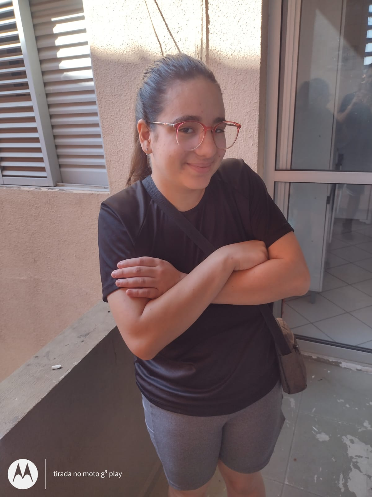

✦ Trainer desde 2023 ✦
Desenvolvedora Back-end em formação · FATEC Itaquera
Olá! Sou a Cecilia, estudante de Desenvolvimento de Software Multiplataforma na FATEC Itaquera. Apaixonada por tecnologia, resolução de problemas e por aprender coisas novas todos os dias. Tenho interesse especial em back-end, autenticação, integração de sistemas e boas práticas de desenvolvimento.
🎒 Em 2024 migrei de conta no GitHub e perdi o histórico dos projetos anteriores. Este portfólio marca um recomeço — e o que vem por aí.
FATEC Itaquera
Agosto/2023 — Previsão: Agosto/2027
Burger King
Fundação Bradesco
SóEducador
Nativo
Básico
Um passeio pelos meus trabalhos ⚡
Sistema em TypeScript para substituir a carteirinha física dos alunos, com 2FA, cadastro em massa e upload de fotos.
Ver projeto →Aplicação simples e funcional para organizar tarefas do dia a dia, com persistência local e interface limpa.
Ver projeto →Consulta de clima em tempo real consumindo API pública, com exibição amigável e busca por cidade.
Ver projeto →